Cool, but obscure X11 tools
- Free42
- GLXGears
- GMixer
- Micropolis
- Sunclock
- X026
- X48
- XArchiver
- XASCII
- XBiff
- XBill
- XBoard
- XCalc
- XCalendar
- XCHM
- XClipboard
- XClock
- XClock/Cat Clock
- XColorSel
- XConsole
- XEdit
- XEarth
- XEyes
- XFontSel
- XKill
- XLennart
- XLoad
- XLock
- XLogo
- XMan
- XMahjongg
- XMessage
- XMixer
- XMMIX
- XMore
- XMotd
- XMosaic
- XMountains
- XNeko
- XOdometer
- XOSView
- XPostIt
- XRoach
- XScreenSaver
- XSnow
- XSpread
- XTerm
- Xv
- Xvkbd
- XZoom
A small collection of cool Unix tools for the X Window System. For cool terminal tools, see Kristof Kovacs' list. All applications have been tested on FreeBSD but should run on other Unix-like operating systems as well.
Free42
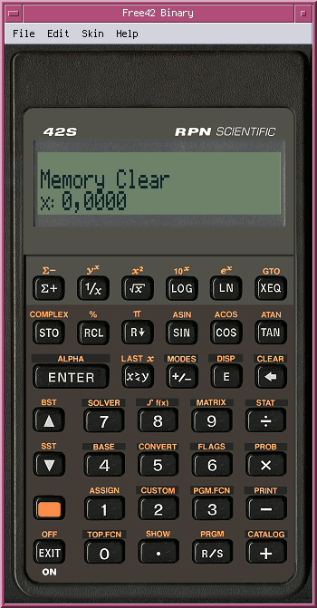Simulation of the HP-42S scientific calculator and HP-82240 printer.
# pkg install misc/free42GLXGears
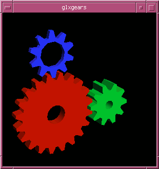A simple OpenGL tool for testing your graphics adapter.
# pkg install graphics/mesa-demosGMixer
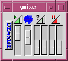Audio mixer for X11, based on GTK+ 1.2.
# pkg install audio/gmixerMicropolis
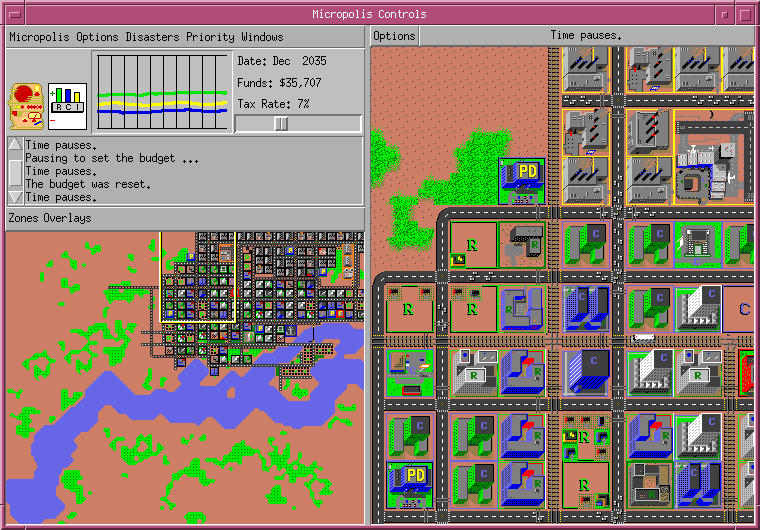Open-source version of the famous computer game SimCity. Available on GitHub.
# git clone https://github.com/interkosmos/micropolis.gitSunclock
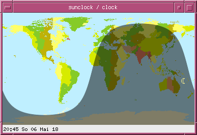A fancy clock for the X Window system, providing local time (legal time and solar time), sunrise, sunset and various geographical data through a point and click interface.
# pkg install astro/sunclockX026
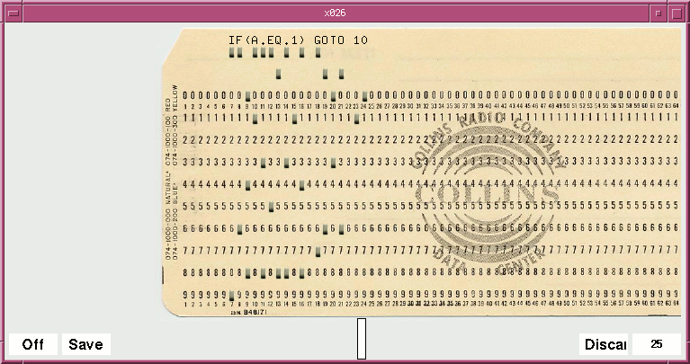X026 is an keypunch emulator, simulating the IBM 026. It is perfect for writing FORTRAN code on Hollerith punch cards and getting a clearer picture on how laborius data input back then was. The default character set is BCD-H.
# pkg install deskutils/x026X48
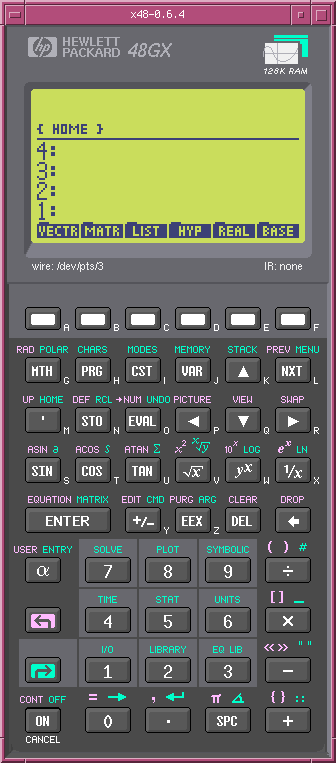Emulator of the HP 48GX graphing calculator. ROM image is included.
# pkg install emulators/x48XArchiver
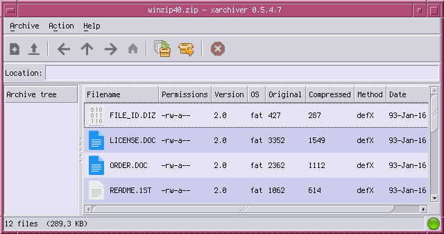XArchiver is a GTK+2 front-end to various archiving tools (tar,
zip, 7z, …).
# pkg install archivers/xarchiverXASCII
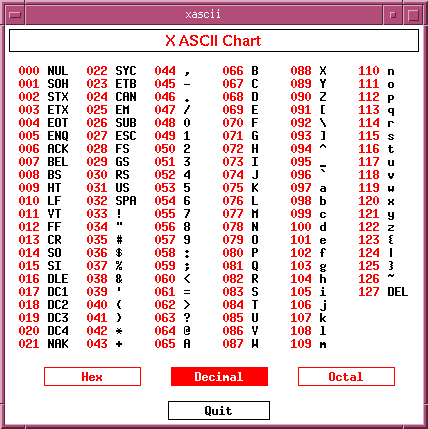XASCII displays the ASCII table in hex, decimal, and octal.
# pkg install x11/xasciiXBiff
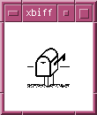XBiff shows a small mailbox with its flag raised when new mail arrives in your inbox. It simply monitors the size of a given file. For instance, the cache of the Sylpheed e-mail client can be watched with:
$ xbiff -file $HOME/.sylpheed-2.0/imapcache/<server>/<address>/INBOX/.sylpheed_cacheYou can change the pixmap in ~/.Xdefaults:
xbiff*flip: false
xbiff*fullPixmap: mailfull
xbiff*emptyPixmap: mailempty
xbiff*fullPixmapMask: mailfullmsk
xbiff*emptyPixmapMask: mailemptymsk
xbiff*shapeWindow: trueInstall it with:
# pkg install x11/xbiffXBill
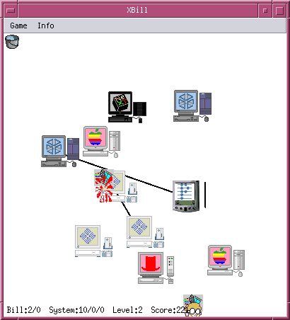XBill is an arcade game from 1994 in which the player has to prevent an evil computer hacker named "Bill" from installing a popular operating system on various machines. The OS can spread over networks and purges existing systems (BSD, Solaris, SGI IRIX, …). A contemporary modification of the game is known as XLennart.
{kind=link}
# pkg install games/xbillXBoard
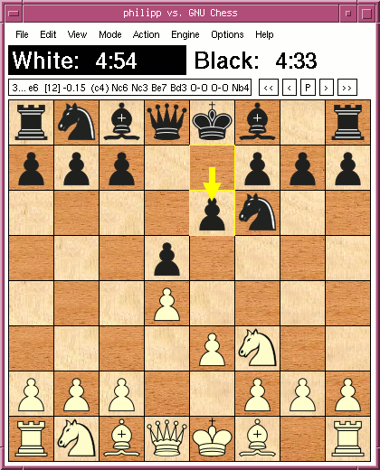XBoard is a graphical front-end for chess engines like GNU Chess. Start it
with xboard -fcp 'gnuchess --xboard'.
# pkg install games/xboardXCalc
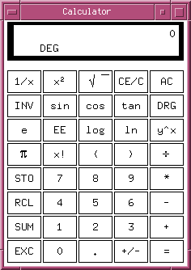A simple and clean scientific calculator for X11. Additional colour styles
imitating the Texas Instruments TI-30 and the Hewlett-Packard 10C are listed in
the file /usr/local/share/X11/app-defaults/XCalc-color. Just copy
one of the styles into your ~/.Xdefaults.
# pkg install x11/xcalcXCalendar
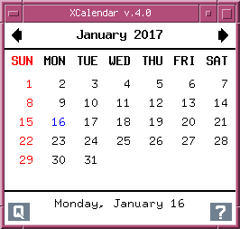A calendar with an integrated notebook.
# pkg install deskutils/xcalendarXCHM
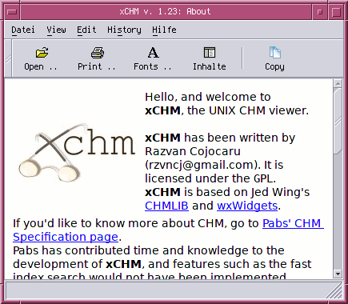Microsoft Windows help file viewer for Unix.
# pkg install deskutils/xchmXClipboard
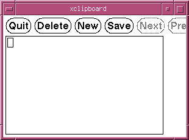A client for clipboard management in X.
# pkg install x11/xclipboardXClock
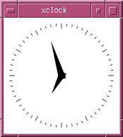An analog and digital clock for X.
# pkg install x11-clocks/xclockXClock/Cat Clock
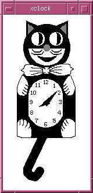A Motif-based variant of MIT xclock that features a "cat" mode.
Available on GitHub.
# git clone https://github.com/BarkyTheDog/catclock.gitXColorSel
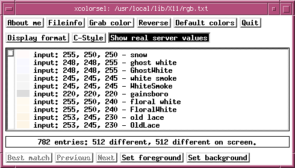Grabs the colours of X windows.
# pkg install x11/xcolorselXConsole
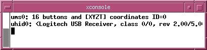XConsole shows system console messages.
# pkg install x11/xconsoleXEdit
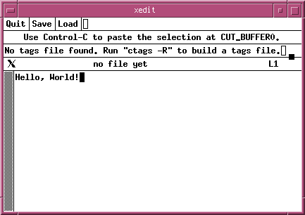A simple text editor for X. The automated backup function for edited files
can be disabled by adding xedit*enableBackups: off to
~/.Xdefaults.
# pkg install x11/xeditXEarth
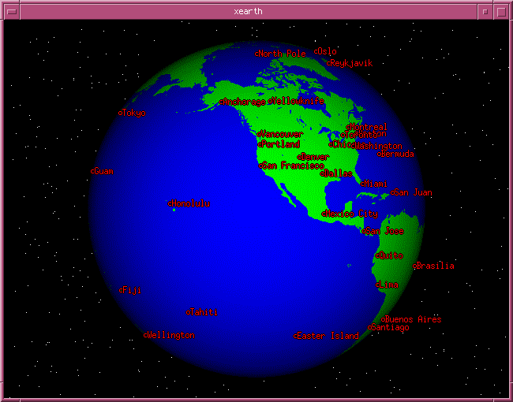Renders the earth in 3D on the root window, making itself an animated wallpaper. To show it inside a window, run:
$ xearth -geometry 800x600 -shade -nolabel -wait 1 -timewarp 50 -noroot -twopixSimiliar tools are XGlobe and XPlanet, which also texture the earth.
# pkg install astro/xearthXEyes
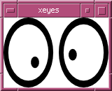Eyes following the mouse cursor.
# pkg install x11/xeyesXFontSel
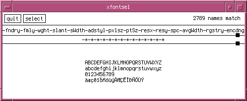Lists installed fonts and available font options.
# pkg install x11-fonts/xfontselXKill
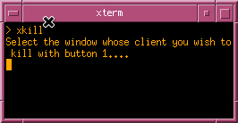Command-line tool to kill X applications.
# pkg install x11/xkillXLennart
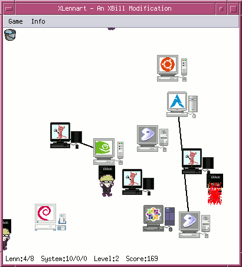XLennart is a modification of the arcade game XBill. An evil and unpopular computer hacker named "Lennart" tries to install his malicious init system on various BSD and Linux systems. Like in XBill, the player has to hit him and restore infected systems.
{kind=link}
# pkg install games/xlennartXLoad
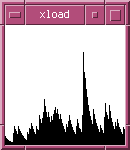XLoad shows the current CPU load.
# pkg install x11/xloadXLock
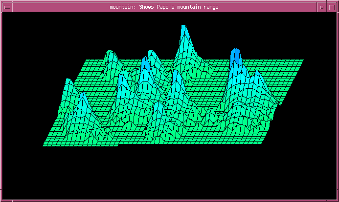XLock locks the screen and optionally shows a screen saver. It can be combined with XAutoLock to activate it after a user defined time of inactivity.
A more simple approach is used by XTransparentLock. Jamie Zawinski, the author of XScreenSaver, has listed some reason why you should use XScreenSaver instead of XLock.
# pkg install x11/xlockmoreXLogo
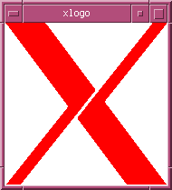XLogo simply draws the logo of the X Window System. The background and
foreground colours can be altered in ~/.Xdefaults.
# pkg install x11/xlogoXMan
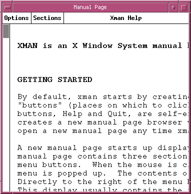XMan displays system man pages.
# pkg install x11/xmanXMahjongg
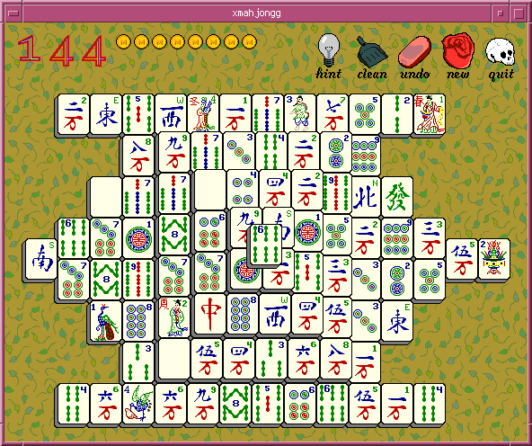Classic Mahjongg game for X11. Several tile sets are available.
# pkg install games/xmahjonggXMessage
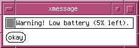XMessage displays arbitrary text messages.
# pkg install x11/xmessageXMixer
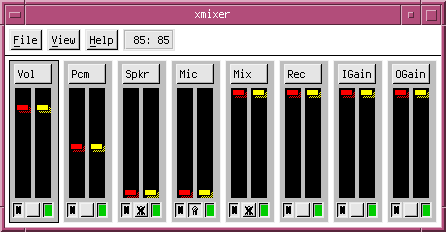Audio mixer for X11.
# pkg install audio/xmixerXMMIX
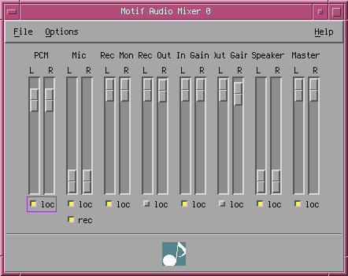Motif-based audio mixer for X11.
# pkg install audio/xmmixXMore
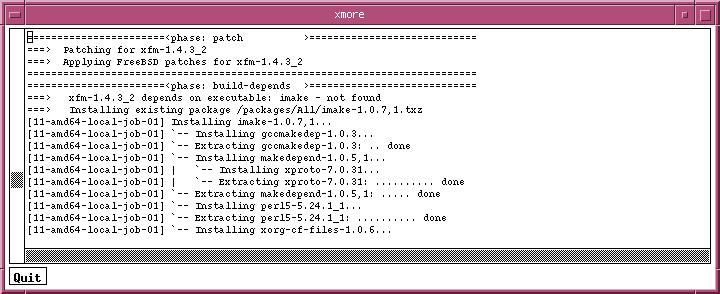XMore is more for X.
# pkg install x11/xmoreXMotd
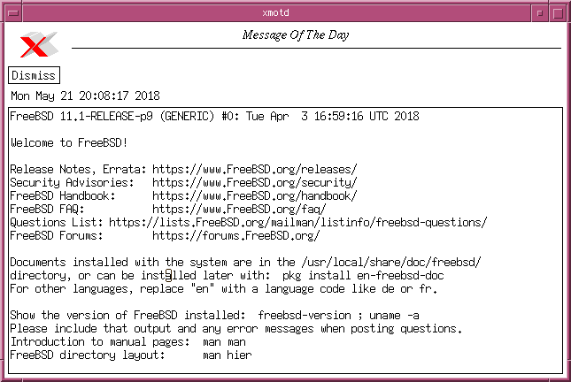XMotd shows the message of the day. Run it with
xmotd -always /etc/motd. The appearance can be altered in
~/.Xdefaults.
# pkg install x11/xmotdXMosaic
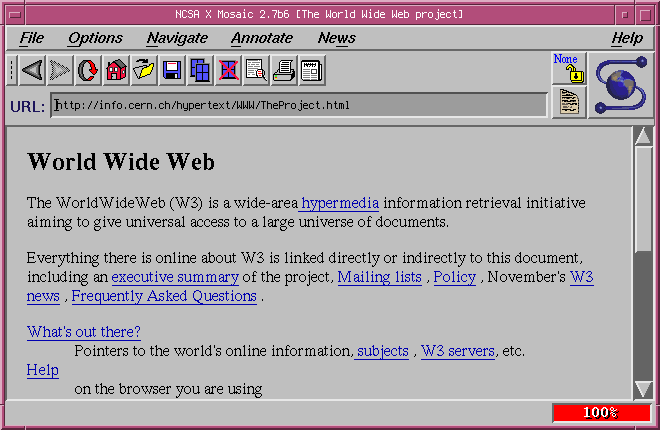NCSA Mosaic, one of the first graphical web browsers, for X. The source code of version 2.7b is available on GitHub.
# git clone https://github.com/alandipert/ncsa-mosaic.gitXMountains
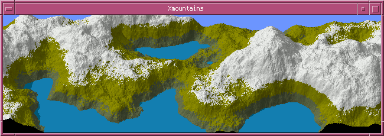XMountains renders a mountain scene into the root window. Also available as an XScreenSaver module.
# pkg install graphics/xmountainsXNeko
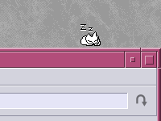Neko (猫) is a cat chasing the mouse cursor all over the screen. Oneko
is a modified version of xneko for BSD and Linux. In the port
games/oneko-sakura several other creatures can be choosen, like
tora-neko, Sakura Kinomoto, Tomoyo Daidouji, the BSD daemon, or a dog.
# pkg install games/xnekoOr:
# pkg install games/onekoOr:
# pkg install games/oneko-sakuraXOdometer
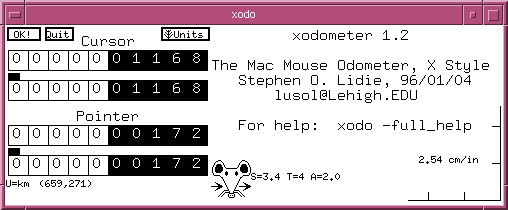XOdometer tracks the total distance of your pointing device. The source code of the version from January 1996 is available on GitHub
# git clone https://github.com/interkosmos/xodo.gitXOSView
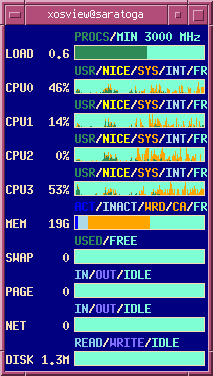XOSView is a visual system monitor for X11.
# pkg install sysutils/xosviewXPostIt
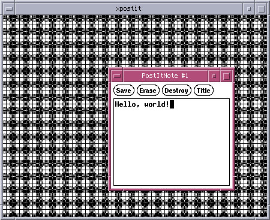The most ugly note taking application on earth.
# pkg install deskutils/xpostitXRoach
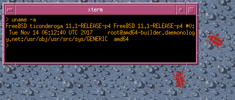XRoach displays disgusting cockroaches on your root window. These creepy crawlies scamper around until they find a window to hide under. Whenever you move or iconify a window, the exposed beetles again scamper for cover.
# pkg install games/xroachXScreenSaver
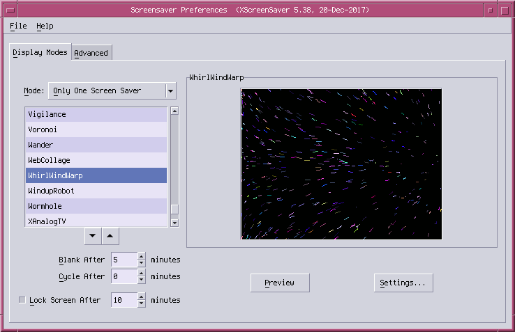Jamie Zawinski's famous screen saver for X11.
# pkg install x11/xscreensaverXSnow
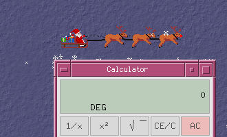Let is snow on your desktop. Shows snow flakes, trees, and santa.
# pkg install x11/xsnowXSpread
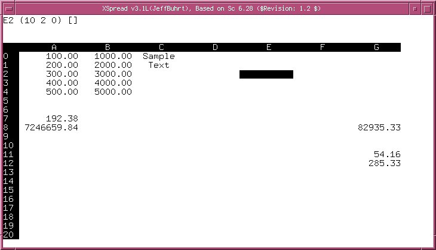XSpread is a simple spreadsheet application based on math/sc. It
can be started without X11 by using the parameter -X.
# pkg install math/xspreadXTerm
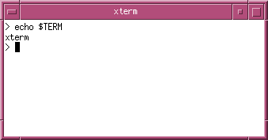Terminal emulator for the X Window System.
# pkg install x11/xtermXv
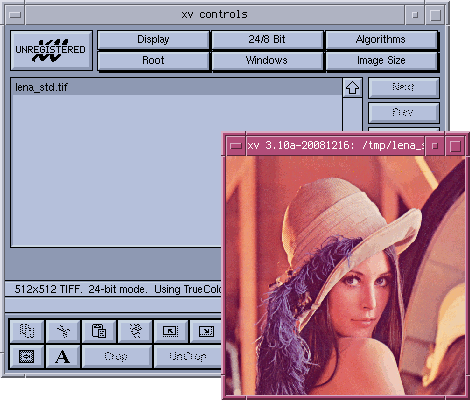Image viewer that displays various formats.
# pkg install graphics/xvXvkbd
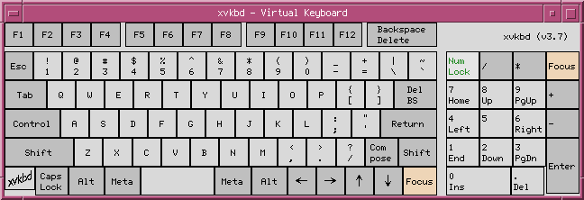Virtual keyboard for X applications.
# pkg install x11/xvkbdXZoom
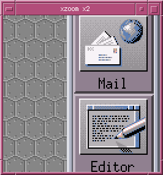Tool to magnify, rotate, and mirror a section of the X screen.
# pkg install x11/xzoomLast Update: Wed, 26 Sep 2018 15:01:52 +0200